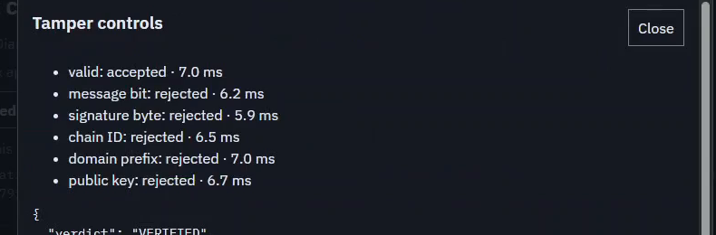

<!doctype html>
<html lang="en">
  <meta charset="utf-8" /><title>QoreLens featured image</title
  ><style>
    @font-face {
      font-family: Plex;
      src: url(./plex-sans.woff2);
    }
    @font-face {
      font-family: Mono;
      src: url(./plex-mono.woff2);
    }
    body {
      margin: 0;
      background: #0e1116;
      color: #e6eaf0;
      font-family: Plex, Arial;
    }
    main {
      width: 1104px;
      height: 534px;
      margin: 48px;
      display: grid;
      grid-template-columns: 45% 55%;
      align-items: center;
    }
    .wordmark {
      color: #e6eaf0;
      font-size: 32px;
      font-weight: 600;
      margin: 0 0 18px;
    }
    h1 {
      font-size: 56px;
      line-height: 1.05;
      margin: 0 0 24px;
      letter-spacing: -1px;
    }
    p {
      font-size: 24px;
      color: #8b95a5;
    }
    footer,
    figcaption {
      font:
        20px Mono,
        monospace;
      color: #8b95a5;
    }
    figure {
      margin: 0;
      background: #151a21;
      padding: 16px;
    }
    figure img {
      display: block;
      width: 100%;
      height: 350px;
      object-fit: contain;
      object-position: 51% 0;
    }
    strong {
      display: inline-block;
      padding: 6px 8px;
      margin: 8px 0;
      font:
        16px Mono,
        monospace;
      border: 1px solid #8b95a5;
    }
    .yes {
      color: #3fb950;
    }
  </style>
  <main>
    <section>
      <p class="wordmark">QoreLens</p>
      <h1>Advertised<br />capabilities.<br />Verified behavior.</h1>
      <p>QoreX wallet lab · Quantum Pass · Diana testnet</p>
      <footer>Build c0384c3b74aa · MIT · open source</footer>
    </section>
    <figure>
      <strong class="yes">Signature: independently VERIFIED</strong>
      <strong>Transaction: CHAIN-OBSERVED</strong>
      <figcaption>Frame from live v1.0.0 demo</figcaption>
    </figure>
  </main>
</html>
